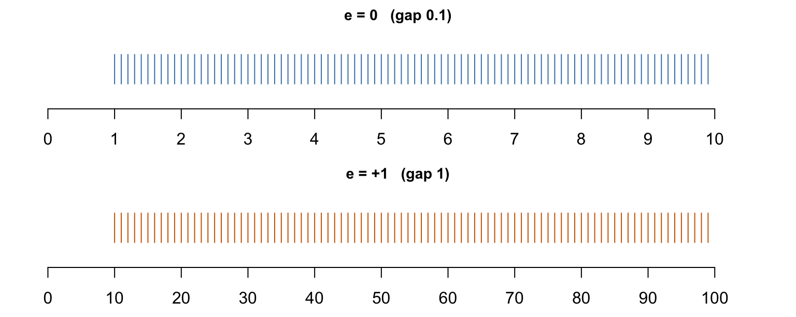

[1] 2147483647[1] NAComputer Arithmetic
2026-09-18
Every number is a string of digits in boxes; each box has a place value.
| 10³ | 10² | 10¹ | 10⁰ |
|---|---|---|---|
| 1 | 3 | 4 | 8 |
1348 = 1\times10^3 + 3\times10^2 + 4\times10^1 + 8\times10^0
A computer uses base 2, so each box (a bit) holds 0 or 1:
| 2³ | 2² | 2¹ | 2⁰ |
|---|---|---|---|
| 1 | 1 | 0 | 1 |
1101_2 = 1\times2^3 + 1\times2^2 + 0\times2^1 + 1\times2^0 = 13
An integer is stored in a fixed number of bits, e.g. 32 or 64. With p bits the largest unsigned value is \sum_{i=0}^{p-1} 2^i = 2^p - 1 .
A 4-bit example: the largest storable integer is 1111_2 = 15.
| 2⁴ | 2³ | 2² | 2¹ | 2⁰ |
|---|---|---|---|---|
| 1 | 0 | 0 | 0 | 0 |
15 + 1 = 16 = 10000_2 needs a fifth box that does not exist → integer overflow
R integers use 32 bits with one sign bit, so the largest is 2^{31}-1:
Unlike C, R does not wrap around silently — it returns NA. R also auto-promotes to double for most arithmetic, so overflow rarely bites unless both operands stay integer:
A real number is stored as sign, mantissa (significant digits) and exponent: x = (-1)^{s} \times 1.d_1 d_2 \cdots d_p \times 2^{\,e}
| sign | mantissa (fixed number of digits) | exponent | |||||
|---|---|---|---|---|---|---|---|
| + | 1 | . | d₁ | d₂ … dp | ×2^ | ± | e |
Double precision (double in R) uses 64 bits:
| part | bits | consequence |
|---|---|---|
| sign | 1 | |
| mantissa | 52 | about 16 significant decimal digits |
| exponent | 11 | e \in [-1022,\ 1023], i.e. magnitudes from 10^{-308} to 10^{308} |
A floating point number is a ruler and a zoom setting:
Our toy computer stores six boxes: sign, a 2-digit mantissa d_1.d_2 (d_1\in\{1,\ldots,9\}, d_2\in\{0,\ldots,9\}), and a signed 1-digit exponent, e\in\{-9,\ldots,9\}:
| sign | 1 | 10⁻¹ | ± | exp | ||
|---|---|---|---|---|---|---|
| + | 3 | . | 1 | ×10^ | + | 0 |
+3.1\times10^{+0} — the closest storable value to \pi
Each of the 19 zoom levels (e = -9,\ldots,9) is a ruler of 90 marks (1.0, 1.1, \ldots, 9.9). At the lowest zoom (e=-9) the leading digit may also be 0 — subnormal numbers — filling the gap between 0 and 1.0\times10^{-9}.
| zoom e | interval | mantissa | magnitude | gap |
|---|---|---|---|---|
| -9 (subnormal) | (0, 10^{-9}) | 0.1,0.2,\ldots,0.9 | \times10^{-9} | 10^{-10} |
| -9 | [10^{-9}, 10^{-8}) | 1.0,1.1,\ldots,9.9 | \times10^{-9} | 10^{-10} |
| \vdots | \vdots | \vdots | \vdots | \vdots |
| 0 | [1, 10) | 1.0, 1.1, \ldots, 9.9 | \times10^{0} | 0.1 |
| +1 | [10, 100) | 1.0,1.1,\ldots,9.9 | \times10^{1} | 1 |
| \vdots | \vdots | \vdots | \vdots | \vdots |
| +9 | [10^{9}, 10^{10}) | 1.0,1.1,\ldots,9.9 | \times10^{9} | 10^{8} |
Stretching by \times10 multiplies the gap by 10 — it does not add marks:

The absolute gap grows with magnitude; the relative gap stays roughly constant across zoom levels.
A number that falls between two marks is stored as the nearer mark. These three numbers share the same mantissa digits and differ only in exponent (zoom):
| x | stored | error |
|---|---|---|
| 0.234 | 0.23 | 0.004 (1.7%) |
| 2.34 | 2.3 | 0.04 (1.7%) |
| 23.4 | 23 | 0.4 (1.7%) |
Absolute error scales with the zoom; relative error does not — it is set by how many mantissa digits exist, not by magnitude.
To add, align by place value. Solid boxes are stored digits, dashed boxes are alignment zeros; digits beyond the mantissa (red) are rounded off.
| 10⁰ | 10⁻¹ | 10⁻² | ||
|---|---|---|---|---|
| 1 | . | 0 | ||
| + | 0 | . | 1 | 0 |
| 1 | . | 1 | 0 |
1.0+0.10=1.1 \ne 1.0
| 10⁰ | 10⁻¹ | 10⁻² | ||
|---|---|---|---|---|
| 1 | . | 0 | ||
| + | 0 | . | 1 | 4 |
| 1 | . | 1 | 4 |
1.0+0.14 \to 1.1
| 10¹ | 10⁰ | 10⁻¹ | 10⁻² | ||
|---|---|---|---|---|---|
| 1 | 0 | . | |||
| + | 0 | 0 | . | 4 | 0 |
| 1 | 0 | . | 4 | 0 |
10+0.40 \to 10
Machine epsilon \epsilon = the gap next to 1 = the smallest increment the last mantissa box can register: here \epsilon = 0.1. Below it, digits are lost — partly (middle) or wholly (right, at a higher zoom).
| sign | mantissa | exponent | value | |
|---|---|---|---|---|
| largest positive | + | 9.9 | +9 | 9.9\times10^{9} |
| smallest positive | + | 0.1 | -9 | 0.1\times10^{-9} |
| largest integer N with N+1 exact | + | 9.9 | +1 | 99 |
Adding two large toy numbers can need an exponent the single digit cannot hold:
| 10¹⁰ | 10⁹ | 10⁸ | |
|---|---|---|---|
| 6 | 0 | ||
| + | 5 | 0 | |
| 1 | 1 | 0 |
6.0\times10^{9} + 5.0\times10^{9} = 1.1\times10^{+10}: exponent 10 needs two digits → overflow, stored as Inf
For doubles the largest value is \approx 1.8\times10^{308}:
A tiny result can fall outside the mantissa entirely:
| sign | 1 | 10⁻¹ | 10⁻² | ± | exp | |||
|---|---|---|---|---|---|---|---|---|
| + | 0 | . | 0 | 1 | ×10^ | − | 9 |
(0.1\times10^{-9})\times0.1 = 0.01\times10^{-9}: the digit 1 falls outside the mantissa → underflow, stored as 0
For doubles the smallest positive value is 2^{-1074}\approx 4.9\times10^{-324} (the smallest with full precision is 2^{-1022}\approx 2.2\times10^{-308}):
[1] 2.220446e-16[1] TRUEpnorm(10) already rounds to exactly 1 before the subtraction, and the difference returns 0 — not one correct digit survives. B A - B true_d
1.000000e+00 0.000000e+00 7.619853e-24 pnorm(10, lower.tail = FALSE) evaluates the tail directly and returns all 16 digits without evaluating B
Compute 1.0 + 0.04 + 0.04 in our 2-digit-mantissa toy system (exact value 1.08).
Left to right, (1.0 + 0.04) + 0.04: each addition needs a third mantissa digit, so each rounds back to 1.0 (the same loss as 1.0+0.40\to1.0 shown earlier, just smaller). Both small terms are lost — result 1.0.
Small terms first, 1.0 + (0.04 + 0.04):
| 8 | . | 0 | ×10^ | − | 2 | then 1.0 + 0.08 → | 1 | . | 1 |
0.04+0.04=0.08 exactly, then 1.0+0.08\to1.1 — one roundoff, not an accumulating one.
sum() uses a long double accumulator — 64-bit mantissa on x86, though only 53-bit on Apple Silicon, where it therefore behaves like the naive loop.kahan_sum <- function(x) {
s <- 0; comp <- 0
for (v in x) { y <- v - comp; t <- s + y; comp <- (t - s) - y; s <- t }
s
}
x <- c(1, rep(1e-16, 1e4)) # exact sum: 1 + 1e-16*1e-4=1+1e-12
s <- 0; for (v in x) s <- s + v # naive loop
c(naive = s - 1,
sorted = sum(sort(x)) - 1,
kahan = kahan_sum(x) - 1,
builtin = sum(x) - 1,
exact = 1e-12) naive sorted kahan builtin exact
0.000000e+00 1.000089e-12 1.000089e-12 0.000000e+00 1.000000e-12 Each small term is below 2^{-53} relative to the running total, so the naive loop discards all 10^4 of them and returns exactly 1 — the entire tail is lost. Sorting, compensation, and the wider accumulator each recover the answer.
Two algebraically identical formulas for the sum of squared deviations: \underbrace{\sum_{i=1}^{n}(x_i - \bar{x})^2}_{\text{two-pass}} \;=\; \underbrace{\sum_{i=1}^{n} x_i^2 - \frac{\left(\sum_i x_i\right)^2}{n}}_{\text{one-pass}}
x = (1, 2, 3): deviations (-1, 0, 1), so \sum(x_i-\bar x)^2 = 2.
Shift by M = 10^{8}: x = (M+1, M+2, M+3). The deviations and the answer are unchanged, but the one-pass formula computes
\sum x_i^2 \approx 3\times10^{16}, \qquad \frac{(\sum x_i)^2}{n} \approx 3\times10^{16}, \qquad \text{difference} = 2.
With 16 significant digits, 3\times10^{16} is stored with a gap of about 4 between neighbours:
| 16 digits kept | lost | |||||||||
|---|---|---|---|---|---|---|---|---|---|---|
| 3 | . | 0 | 0 | … | 0 | 0 | 1 | 2 | 4 | ×10^16 |
The true answer, 2, lies entirely in the lost digit.
The one-pass error grows like \epsilon M^2 n, so it worsens continuously as the shift M grows — eventually giving a negative “variance”, which is impossible:
M one_pass
[1,] 1e+00 1
[2,] 1e+01 1
[3,] 1e+02 1
[4,] 1e+03 1
[5,] 1e+04 1
[6,] 1e+05 1
[7,] 1e+06 1
[8,] 1e+07 1
[9,] 1e+08 0
[10,] 1e+09 0
[11,] 1e+10 -32768var() does this.)var_shifted <- function(x) { n <- length(x); d <- x - x[1]; (sum(d^2) - sum(d)^2 / n) / (n - 1) }
var_welford <- function(x) {
m <- 0; S <- 0
for (k in seq_along(x)) { m_old <- m; m <- m + (x[k] - m) / k; S <- S + (x[k] - m_old) * (x[k] - m) }
S / (length(x) - 1)
}
x <- c(1, 2, 3) + 1e10
c(one_pass = var1(x), shifted = var_shifted(x), welford = var_welford(x))one_pass shifted welford
-32768 1 1 For x>0 all terms are positive, so no cancellation occurs. Therefore compute e^{-x} = \frac{1}{e^{x}}, \qquad x > 0 .
naive reciprocal true
2.805096e+11 1.928750e-22 1.928750e-22 General principle: rearrange a formula so that quantities of similar magnitude and the same sign are combined; avoid computing a small result as the difference of two large numbers.
This kernel appears whenever a difference is taken on the log scale, since \log(e^{a} - e^{b}) = a + \log(1 - e^{-u}), \qquad u = a - b > 0.
Evaluating it literally as log(1 - exp(-u)) fails at both ends of the range:
exp(-u) returns exactly 1 and the result is -\infty.log returns 0 instead of -e^{-u}.R provides two functions built precisely for arguments near the landmark 1, each evaluating its series directly instead of forming the offending sum or difference:
expm1(x) computes e^{x}-1. For small x it returns \approx x with full precision, whereas exp(x) - 1 first rounds e^{x} to within 2^{-53} of 1 and then subtracts.log1p(x) computes \log(1+x). For small x it returns \approx x with full precision, whereas log(1 + x) first rounds 1+x to exactly 1 and then takes the log.Applied to compute \log(1-e^{-u}), each removes one of the two failures — and neither removes the other:
f_expm1 evaluates -\operatorname{expm1}(-u) = 1-e^{-u} without subtraction, fixing small u; its outer log then receives a value near u, far from 1, and is safe. f_log1p passes -e^{-u} straight to log1p, fixing large u; but for small u that argument has already rounded to -1.
library(gt)
f_naive <- function(u) log(1 - exp(-u)) # both failures
f_expm1 <- function(u) log(-expm1(-u)) # never forms the difference
f_log1p <- function(u) log1p(-exp(-u)) # never forms the sum
log1mexp <- function(u) ifelse(u <= log(2), log(-expm1(-u)), log1p(-exp(-u))) # better solution
u <- c(1e-100,1e-18, 1e-15, 1e-8, 1, 20, 50, 500)
g <- function(x) formatC(x, format = "g", digits = 8)
gt(data.frame(u = g(u), naive = g(f_naive(u)), expm1 = g(f_expm1(u)),
log1p = g(f_log1p(u)), correct = g(log1mexp(u)))) |>
tab_options(table.font.size = "30px")| u | naive | expm1 | log1p | correct |
|---|---|---|---|---|
| 1e-100 | -Inf | -230.25851 | -Inf | -230.25851 |
| 1e-18 | -Inf | -41.446532 | -Inf | -41.446532 |
| 1e-15 | -34.539576 | -34.538776 | -34.539576 | -34.538776 |
| 1e-08 | -18.420681 | -18.420681 | -18.420681 | -18.420681 |
| 1 | -0.45867515 | -0.45867515 | -0.45867515 | -0.45867515 |
| 20 | -2.0611536e-09 | -2.0611536e-09 | -2.0611536e-09 | -2.0611536e-09 |
| 50 | 0 | 0 | -1.9287498e-22 | -1.9287498e-22 |
| 500 | 0 | 0 | -7.1245764e-218 | -7.1245764e-218 |
log1p — both lose digits, then collapse to -\infty. Only expm1 is right.expm1 — both collapse to 0. Only log1p is right.log1mexpBranch at u = \log 2, where e^{-u} = 1/2 — safely far from both traps:
The same function is shipped by several CRAN packages, all tracing to Mächler (2012).
| u | naive | mine | copula | VGAM | DPQ |
|---|---|---|---|---|---|
| 1e-100 | -Inf | -230.25851 | -230.25851 | -230.25851 | -230.25851 |
| 1e-18 | -Inf | -41.446532 | -41.446532 | -41.446532 | -41.446532 |
| 1e-15 | -34.539576 | -34.538776 | -34.538776 | -34.538776 | -34.538776 |
| 1e-08 | -18.420681 | -18.420681 | -18.420681 | -18.420681 | -18.420681 |
| 1 | -0.45867515 | -0.45867515 | -0.45867515 | -0.45867515 | -0.45867515 |
| 20 | -2.0611536e-09 | -2.0611536e-09 | -2.0611536e-09 | -2.0611536e-09 | -2.0611536e-09 |
| 50 | 0 | -1.9287498e-22 | -1.9287498e-22 | -1.9287498e-22 | -1.9287498e-22 |
| 500 | 0 | -7.1245764e-218 | -7.1245764e-218 | -7.1245764e-218 | -7.1245764e-218 |
All four implementations agree to full precision across eighteen orders of magnitude, while the naive form is wrong at both ends. Prefer the package function in real code; write your own only to understand why it works.
Likelihoods are products of many probabilities; normalizing constants involve factorials or exponentials.
\prod_{i=1}^{2000} p(x_i) = \left(\tfrac12\right)^{2000} \approx 10^{-602} \quad\to\quad \text{underflow to } 0
1000! \approx 4\times10^{2567} \quad\to\quad \text{overflow to } \infty
\text{logistic: } \frac{e^{x}}{1+e^{x}} \text{ at } x = 1000 \quad\to\quad \frac{\infty}{\infty} = \texttt{NaN}
Two remedies: (1) change the algebraic expression; (2) work on the log scale.
Two equivalent forms: \sigma(x) = \frac{e^{x}}{1+e^{x}} = \frac{1}{1+e^{-x}}
| x | e^{x}/(1+e^{x}) | 1/(1+e^{-x}) |
|---|---|---|
| +1000 | e^{x}=\infty, $/= $ NaN ✗ |
e^{-x}=0, 1/1 = 1 ✓ |
| -1000 | e^{x}=0, 0/1 = 0 ✓ | e^{-x}=\infty, 1/\infty = 0 ✓ |
The second form never divides \infty by \infty.
Represent a positive number x by \ell_x = \log x: x = e^{2000} \iff \ell_x = 2000, \qquad x = e^{-2000} \iff \ell_x = -2000 .
Numbers that overflow or underflow in ordinary form are ordinary numbers on the log scale.
We then need each operation f translated to the log scale: x_1,\dots,x_n \xrightarrow{\;f\;} y \qquad\Longleftrightarrow\qquad \ell_1,\dots,\ell_n \xrightarrow{\;\tilde f\;} \ell_y = \log f(e^{\ell_1},\dots,e^{\ell_n})
\log(x_1 x_2) = \ell_1 + \ell_2, \qquad \log\left(\prod_{i=1}^{n} x_i\right) = \sum_{i=1}^{n} \ell_i, \qquad \log\frac{x_1}{x_2} = \ell_1 - \ell_2
Log-likelihood: \log \prod_i p(x_i) = \sum_i \log p(x_i) — always compute the log-likelihood, never the likelihood.
Example: x_1 = 2^{2000}, x_2 = 2^{2001} both overflow, but \log\frac{x_1}{x_2} = 2000\log 2 - 2001\log 2 = -\log 2 .
Sums are the hard case: \log(x_1 + x_2) \neq \ell_1 + \ell_2. We need \log\left(\sum_{i=1}^{n} x_i\right) = \log\left(\sum_{i=1}^{n} e^{\ell_i}\right), but the e^{\ell_i} may overflow or underflow. Let m = \max_i \ell_i and factor it out: \log\left(\sum_{i=1}^{n} e^{\ell_i}\right)
= \log\left(e^{m}\sum_{i=1}^{n} e^{\ell_i - m}\right)
= m + \log\left(\sum_{i=1}^{n} e^{\ell_i - m}\right) One dominant term: the sum becomes 1 + (\text{tiny}), and use log1p: \log(e^{a} + e^{b}) = m + \operatorname{log1p}\!\left(e^{-|a-b|}\right), \qquad m = \max(a,b).
x_i = e^{2000}, e^{2001}, e^{2002} — each overflows to Inf, so \sum x_i computed directly is Inf.
| i=1 | i=2 | i=3 | |
|---|---|---|---|
| \ell_i | 2000 | 2001 | 2002 |
| \ell_i - m (m = 2002) | -2 | -1 | 0 |
| e^{\ell_i - m} | 0.135 | 0.368 | 1 |
\log\sum_i x_i = 2002 + \log(0.135 + 0.368 + 1) = 2002.408
direct lse
Inf 2002.408 Applications: marginal likelihoods \log\sum_k \pi_k p_k(x) in mixtures, posterior normalizing constants, softmax.
For x > y > 0 with \ell_x = \log x, \ell_y = \log y: \log(x - y) = \log\left(e^{\ell_x}\left(1 - e^{\ell_y - \ell_x}\right)\right) = \ell_x + \log\left(1 - e^{\ell_y - \ell_x}\right)
log1p(-exp(ly - lx)) to avoid the cancellation in 1 - e^{\ell_y-\ell_x}.[1] 2020The log-sum-exp trick is already implemented in matrixStats (used by hundreds of CRAN/Bioconductor packages):
mine matrixStats
2002.408 2002.408 For two terms, DPQ gives the log-scale counterpart of +, taken from R’s own pgamma() C code:
naive DPQ
Inf 2000.313 Use logspace.add() for a pair, logSumExp() for a vector.
logspace.sub(lx, ly) computes \log(e^{lx} - e^{ly}), the log-scale counterpart of subtraction, and logspace.add() does the same for the sum. Four extreme cases of u = lx - ly:
lx ly u naive DPQ
[1,] 2e+03 1999 1e+00 NaN 1.999541e+03
[2,] 1e-20 0 1e-20 -Inf -4.605170e+01
[3,] -1e+03 -1001 1e+00 -Inf -1.000459e+03
[4,] 0e+00 -500 5e+02 0 -7.124576e-218| computing | u = a-b | e^{a} - e^{b} in doubles | naive log() |
logspace.sub |
|---|---|---|---|---|
| \log(e^{2000} - e^{1999}) | 1 | Inf - Inf → NaN |
NaN |
1999.54 |
| \log(e^{10^{-20}} - e^{0}) | 10^{-20} | 1 - 1 → 0 |
-\infty | -46.05 |
| \log(e^{-1000} - e^{-1001}) | 1 | 0 - 0 → 0 |
-\infty | -1000.46 |
| \log(e^{0} - e^{-500}) | 500 | 1 - 1.93e-22 → 1 |
0 | -1.93\times10^{-22} |
The third column is the whole story: the subtraction has been destroyed before log is ever called — by overflow, cancellation, underflow, and absorption respectively. The naive expression returns a wrong answer — silently, in three of four cases — across the whole range: for operands too large, too small, too close, and too far apart.
Software provides functions written specifically to avoid rounding error, underflow, and overflow.
| instead of | use | reason | solution |
|---|---|---|---|
log(1 + x) |
log1p(x) |
for tiny x, 1 + x rounds to 1 |
Taylor series x - \frac{x^2}{2} + \cdots |
exp(x) - 1 |
expm1(x) |
for tiny x, exp(x) rounds to 1 |
Taylor series x + \frac{x^2}{2} + \cdots |
log(factorial(n)) |
lfactorial(n), lgamma(n + 1) |
factorial(n) overflows |
Stirling series |
log(choose(n, k)) |
lchoose(n, k) |
overflow | sum of lgamma terms |
log(dnorm(x)) |
dnorm(x, log = TRUE) |
dnorm(x) underflows |
closed-form log density |
log(pnorm(x)) |
pnorm(x, log.p = TRUE) |
underflow | asymptotic expansion |
log(1 - pnorm(x)) |
pnorm(x, lower.tail = FALSE, log.p = TRUE) |
cancellation and underflow | upper tail computed directly |
naive log1p log1mexp stable
-Inf -Inf -53.23129 -53.23129 The target is \log\{1 - \Phi(10)\} \approx -53.23, where 1 - \Phi(10) \approx 7.6 \times 10^{-24} is far below machine epsilon (\approx 2.2 \times 10^{-16}).
naive and log1p. pnorm(10) rounds to exactly 1, so the small difference is lost before any logarithm is taken. log1p preserves accuracy only for arguments that are themselves accurate.
log1mexp. Work from \ell = \log\Phi(10) \approx -7.6\times10^{-24}, which R returns accurately. \log\{1-\Phi(10)\} = \log(1 - e^{\ell}) = \log(1 - e^{-u}) = \texttt{log1mexp}(u), and since u is tiny the expm1 branch applies.
stable. With lower.tail = FALSE, R computes 1 - \Phi(10) directly, never forming \Phi(10), and log.p = TRUE returns its logarithm without underflow. A computing method is to apply log-sum-exp to the \log (\texttt{dnorm}(x)).
naive log1p log1mexp stable
0.000000e+00 -7.619853e-24 -7.619853e-24 -7.619853e-24 Here \Phi(-10) \approx 7.6 \times 10^{-24} and the target is \log\{1 - \Phi(-10)\} \approx -7.6 \times 10^{-24}, a tiny negative number rather than a large one.
naive. The subtraction 1 - 7.6 \times 10^{-24} rounds to exactly 1, so every significant digit is destroyed and the answer is reported as 0.log1p. The argument pnorm(-10) is itself accurate, since a number near zero is represented with full relative precision. log1p then evaluates \log(1 + x) by its Taylor series without ever forming 1 + x, recovering all digits.log1mexp. Now \ell = \log\Phi(-10) \approx -53.23, so u = 53.23 and the log1p branch applies. The same call is correct in both examples — only the branch differs.stable. Also correct, and preferable in general.The contrast between the two examples is the location of the loss. At x=10 the damage occurs inside pnorm(10) before log1p is reached, so no reformulation of the outer expression helps. At x=-10 only the outer subtraction is unstable, which is what log1p is for.
The general lesson: stay on the log scale throughout. Ask R for \log\Phi rather than \Phi, and take the complement with log1mexp, which selects the right branch automatically. The tail direction then no longer needs to be diagnosed by hand.
NA with a warning in R (not silent wraparound as in C).Inf; underflow → 0 (silent, and thus more dangerous).log1p, expm1, lgamma, dnorm(log=TRUE))(log-sum-exp).